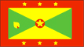
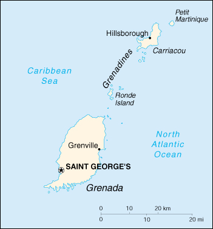

{kind=link}


| Grenada |  |
|
|  | |
| Introduction |
Background: The smallest independent country in the western hemisphere, Grenada was seized by a Marxist military council on 19 October 1983. Six days later the island was invaded by US forces and those of six other Caribbean nations, which quickly captured the ringleaders and their hundreds of Cuban advisers. Free elections were reinstituted the following year.
| Geography |
Location: Caribbean, island between the Caribbean Sea and Atlantic Ocean, north of Trinidad and Tobago
Geographic coordinates: 12 07 N, 61 40 W
Map references: Central America and the Caribbean
Area:
total:
340 sq km
land:
340 sq km
water:
0 sq km
Area - comparative: twice the size of Washington, DC
Land boundaries: 0 km
Coastline: 121 km
Maritime claims:
exclusive economic zone:
200 nm
territorial sea:
12 nm
Climate: tropical; tempered by northeast trade winds
Terrain: volcanic in origin with central mountains
Elevation extremes:
lowest point:
Caribbean Sea 0 m
highest point:
Mount Saint Catherine 840 m
Natural resources: timber, tropical fruit, deepwater harbors
Land use:
arable land:
15%
permanent crops:
18%
permanent pastures:
3%
forests and woodland:
9%
other:
55% (1993 est.)
Irrigated land: NA sq km
Natural hazards: lies on edge of hurricane belt; hurricane season lasts from June to November
Environment - current issues: NA
Environment - international agreements:
party to:
Biodiversity, Climate Change, Desertification, Endangered Species, Law of the Sea, Ozone Layer Protection, Whaling
signed, but not ratified:
none of the selected agreements
Geography - note: the administration of the islands of the Grenadines group is divided between Saint Vincent and the Grenadines and Grenada
| People |
Population: 89,018 (July 2000 est.)
Age structure:
0-14 years:
38% (male 17,106; female 16,634)
15-64 years:
58% (male 27,267; female 24,356)
65 years and over:
4% (male 1,653; female 2,002) (2000 est.)
Population growth rate: -0.36% (2000 est.)
Birth rate: 20.96 births/1,000 population (2000 est.)
Death rate: 8.02 deaths/1,000 population (2000 est.)
Net migration rate: -16.54 migrant(s)/1,000 population (2000 est.)
Sex ratio:
at birth:
1.02 male(s)/female
under 15 years:
1.03 male(s)/female
15-64 years:
1.12 male(s)/female
65 years and over:
0.83 male(s)/female
total population:
1.07 male(s)/female (2000 est.)
Infant mortality rate: 14.63 deaths/1,000 live births (2000 est.)
Life expectancy at birth:
total population:
64.52 years
male:
62.74 years
female:
66.31 years (2000 est.)
Total fertility rate: 2.42 children born/woman (2000 est.)
Nationality:
noun:
Grenadian(s)
adjective:
Grenadian
Ethnic groups: black 82% some South Asians (East Indians) and Europeans, trace Arawak/Carib Amerindian
Religions: Roman Catholic 53%, Anglican 13.8%, other Protestant 33.2%
Languages: English (official), French patois
Literacy:
definition:
age 15 and over can read and write
total population:
98%
male:
98%
female:
98% (1970 est.)
| Government |
Country name:
conventional long form:
none
conventional short form:
Grenada
Data code: GJ
Government type: constitutional monarchy with Westminster-style parliament
Capital: Saint George's
Administrative divisions: 6 parishes and 1 dependency*; Carriacou and Petit Martinique*, Saint Andrew, Saint David, Saint George, Saint John, Saint Mark, Saint Patrick
Independence: 7 February 1974 (from UK)
National holiday: Independence Day, 7 February (1974)
Constitution: 19 December 1973
Legal system: based on English common law
Suffrage: 18 years of age; universal
Executive branch:
chief of state:
Queen ELIZABETH II (since 6 February 1952), represented by Governor General Daniel WILLIAMS (since 9 August 1996)
head of government:
Prime Minister Keith MITCHELL (since 22 June 1995)
cabinet:
Cabinet appointed by the governor general on the advice of the prime minister
elections:
none; the monarch is hereditary; governor general appointed by the monarch; prime minister appointed by the governor general from among the members of the House of Assembly
Legislative branch:
bicameral Parliament consists of the Senate (a 13-member body, 10 appointed by the government and three by the leader of the opposition) and the House of Representatives (15 seats; members are elected by popular vote to serve five-year terms)
elections:
last held on 18 January 1999 (next to be held by NA October 2004)
election results:
House of Representatives - percent of vote by party - NA; seats by party - NNP 15
Judicial branch: West Indies Associate States Supreme Court (an associate judge resides in Grenada)
Political parties and leaders: Grenada United Labor Party or GULP [Herbert PREUDHOMME]; Maurice Bishop Patriotic Movement or MBPM [Terrence MARRYSHOW]; National Democratic Congress or NDC [George BRIZAN]; New National Party or NNP [Keith MITCHELL]; The Democratic Labor Party or DLP [Francis ALEXIS]; The National Party or TNP [Ben JONES]
International organization participation: ACP, C, Caricom, CDB, ECLAC, FAO, G-77, IBRD, ICAO, ICFTU, ICRM, IDA, IFAD, IFC, IFRCS, ILO, IMF, IMO, Interpol, IOC, ISO (subscriber), ITU, LAES, NAM, OAS, OECS, OPANAL, OPCW, UN, UNCTAD, UNESCO, UNIDO, UPU, WCL, WHO, WIPO, WToO, WTrO
Diplomatic representation in the US:
chief of mission:
Ambassador Denis G. ANTOINE
chancery:
1701 New Hampshire Avenue NW, Washington, DC 20009
telephone:
[1] (202) 265-2561
consulate(s) general:
New York
Diplomatic representation from the US:
chief of mission:
the ambassador to Barbados is accredited to Grenada; Charge d'Affairs Lloyd MOSS
embassy:
Point Salines, Saint George's
mailing address:
P. O. Box 54, Saint George's, Grenada, West Indies
telephone:
[1] (473) 444-1173 through 1176
FAX:
[1] (473) 444-4820
Flag description: a rectangle divided diagonally into yellow triangles (top and bottom) and green triangles (hoist side and outer side), with a red border around the flag; there are seven yellow, five-pointed stars with three centered in the top red border, three centered in the bottom red border, and one on a red disk superimposed at the center of the flag; there is also a symbolic nutmeg pod on the hoist-side triangle (Grenada is the world's second-largest producer of nutmeg, after Indonesia); the seven stars represent the seven administrative divisions
| Economy |
Economy - overview: In this island economy progress in fiscal reforms and prudent macroeconomic management have boosted annual growth to 5%-6% in 1998-99. The increase in economic activity has been led by construction and trade. Tourist facilities are being expanded; tourism is the leading foreign exchange earner. Major short-term concerns are the rising fiscal deficit and the deterioration in the external account balance. Grenada shares a common central bank and a common currency with seven other members of the Organization of Eastern Caribbean States (OECS).
GDP: purchasing power parity - $360 million (1999 est.)
GDP - real growth rate: 5% (1999 est.)
GDP - per capita: purchasing power parity - $3,700 (1999 est.)
GDP - composition by sector:
agriculture:
9.7%
industry:
15%
services:
75.3% (1996 est.)
Population below poverty line: NA%
Household income or consumption by percentage share:
lowest 10%:
NA%
highest 10%:
NA%
Inflation rate (consumer prices): 1.3% (1998)
Labor force: 42,300 (1996)
Labor force - by occupation: services 62%, agriculture 24%, industry 14% (1999 est.)
Unemployment rate: 15% (1997)
Budget:
revenues:
$85.8 million
expenditures:
$102.1 million, including capital expenditures of $28 million (1997)
Industries: food and beverages, textiles, light assembly operations, tourism, construction
Industrial production growth rate: 0.7% (1997 est.)
Electricity - production: 105 million kWh (1998)
Electricity - production by source:
fossil fuel:
100%
hydro:
0%
nuclear:
0%
other:
0% (1998)
Electricity - consumption: 98 million kWh (1998)
Electricity - exports: 0 kWh (1998)
Electricity - imports: 0 kWh (1998)
Agriculture - products: bananas, cocoa, nutmeg, mace, citrus, avocados, root crops, sugarcane, corn, vegetables
Exports: $26.8 million (1998)
Exports - commodities: bananas, cocoa, nutmeg, fruit and vegetables, clothing, mace
Exports - partners: Caricom 32.3%, UK 20%, US 13%, Netherlands 8.8% (1991)
Imports: $200 million (1998)
Imports - commodities: food, manufactured goods, machinery, chemicals, fuel (1989)
Imports - partners: US 31.2%, Caricom 23.6%, UK 13.8%, Japan 7.1% (1991)
Debt - external: $89.2 million (1998)
Economic aid - recipient: $8.3 million (1995)
Currency: 1 East Caribbean dollar (EC$) = 100 cents
Exchange rates: East Caribbean dollars (EC$) per US$1 - 2.7000 (fixed rate since 1976)
Fiscal year: calendar year
| Communications |
Telephones - main lines in use: 23,000 (1995)
Telephones - mobile cellular: 400 (1995)
Telephone system:
automatic, islandwide telephone system
domestic:
interisland VHF and UHF radiotelephone links
international:
new SHF radiotelephone links to Trinidad and Tobago and Saint Vincent; VHF and UHF radio links to Trinidad
Radio broadcast stations: AM 2, FM 1, shortwave 0 (1998)
Radios: 57,000 (1997)
Television broadcast stations: 2 (1997)
Televisions: 33,000 (1997)
Internet Service Providers (ISPs): 1 (1999)
| Transportation |
Railways: 0 km
Highways:
total:
1,040 km
paved:
638 km
unpaved:
402 km (1996 est.)
Ports and harbors: Grenville, Saint George's
Merchant marine: none (1999 est.)
Airports: 3 (1999 est.)
Airports - with paved runways:
total:
3
2,438 to 3,047 m:
1
914 to 1,523 m:
1
under 914 m:
1 (1999 est.)
| Military |
Military branches: Royal Grenada Police Force (includes Special Service Unit), Coast Guard
Military expenditures - dollar figure: $NA
Military expenditures - percent of GDP: NA%
| Transnational Issues |
Disputes - international: none
Illicit drugs: small-scale cannabis cultivation; lesser transshipment point for marijuana and cocaine to US